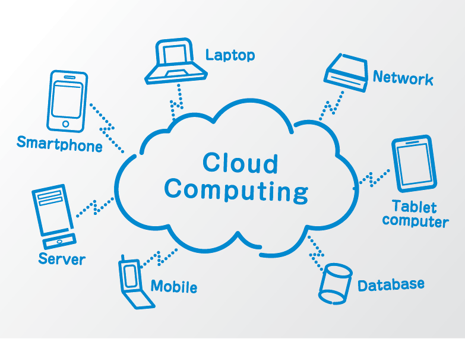

Experiences

Interests

Cloud Computing
I'm interested in learning and working with cloud platforms like AWS, GCP, and Azure. I enjoy exploring infrastructure as code, scalable deployments, and cloud-native services.
I'm particularly drawn to serverless architectures and managed services that simplify backend complexity.
I aim to deepen my understanding of networking, IAM, and cost optimization in cloud environments.
DevOps & Automation
I’m passionate about DevOps practices, CI/CD pipelines, containerization with Docker, and orchestration using Kubernetes. I love automating workflows and improving deployment efficiency.
I'm exploring tools like Terraform and Ansible for infrastructure automation.
I’m also curious about monitoring, observability, and building self-healing systems.
I'm working on integrating security checks into pipelines (DevSecOps) to enhance reliability from the start.
Distributed Systems
I'm fascinated by distributed systems and enjoy studying concepts like consensus algorithms, scalability, fault tolerance, and eventual consistency in modern architectures.
I enjoy analyzing case studies of large-scale systems like Kafka, Cassandra, and Kubernetes.
I'm eager to build resilient microservices that handle real-world complexity and data distribution.
I want to dive deeper into CAP theorem trade-offs and their impact on service design.
System Design
I love diving into system design — thinking about architecture, data flow, performance bottlenecks, and building reliable and maintainable services at scale.
I regularly practice design interviews and draw diagrams to map out components and their interactions.
I’m interested in balancing trade-offs between latency, throughput.
I’m constantly refining my approach by reviewing designs from real-world companies and tech blogs.